FIELD NOTES — ON BEING IN A BAND CALLED
Five years of practices, repairs, and small stages — and what it taught me about staying with something long enough to get good at it.
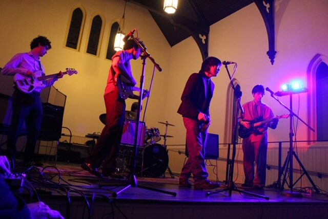
01 — HOW IT STARTED
Gasleak began as a group chat — thirteen-plus people from the same Hamilton high school kicking around the idea of starting a band, the way group chats do. It narrowed down fast, to the handful of people who actually showed up.
At the first practice, in a member's basement, someone upstairs was cooking on the stovetop and set off an actual gas leak in the house. The name wrote itself.
None of the original four of us knew how to play drums. We played our first show without one — then begged the drummer from the band before us on the bill to sit in for the set. He never really left. That's how we became five.
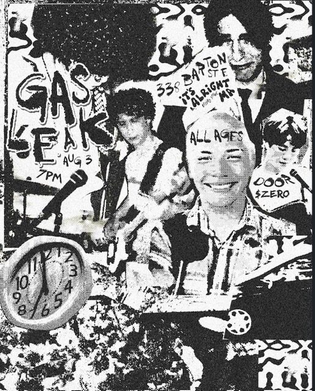
02 — THE OTHER HALF OF IT
I study Electrical Engineering Technology, and most of what I actually use from it shows up here, not in a classroom. Being in this band is the reason I've had the confidence to take on gear other people would write off — a Fender Stratocaster with a shorted circuit, and a busted CRT television — both acquired mainly because I was fairly sure I could get them working again.
Fixing them meant relearning things I'd only ever had in theory: tracing a signal path, reading a schematic, understanding what's actually happening inside a guitar's wiring or a tube television's flyback transformer. It's the same instinct that now has me paying attention to gain staging in a DAW, what a compressor's knee is actually doing, or why a mixer's trim matters before you ever touch the fader.
None of that was the plan when we started the band. It became the plan because the band gave me a reason to care.
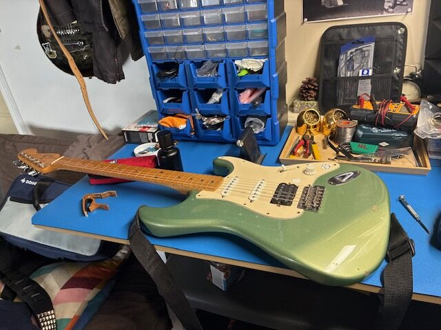
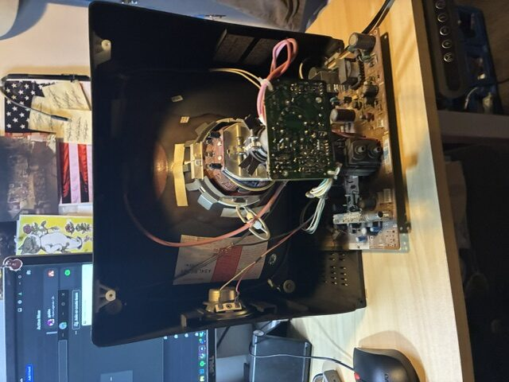
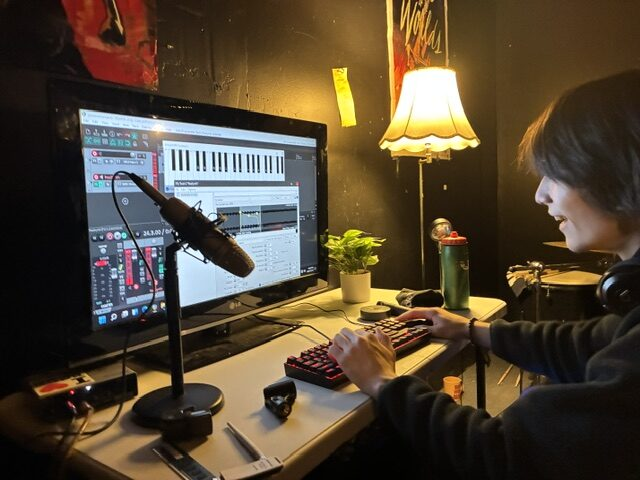
03 — WHY IT'S STUCK
[Draft — personalize this paragraph with your own specifics before publishing]
Gasleak has outlasted almost everything else that started in high school with us. Somewhere along the way I ended up handling a lot of the logistics too — booking, gear, a share of the creative direction — on top of playing. It's where I learned to finish what I start, to fix things instead of replacing them, and to trust that getting good at something is mostly just deciding to stay.
04 — THE LINEUP
Influenced by Bloc Party, Interpol, Pixies, Radiohead, and Hum. Live, we've been called a lot of things — the one that stuck is a frontman who plays like a "caged monkey." We built a rehearsal and recording space in downtown Hamilton, which is where most of this actually gets written.
05 — WHERE WE'VE PLAYED
06 — THE ARCHIVE
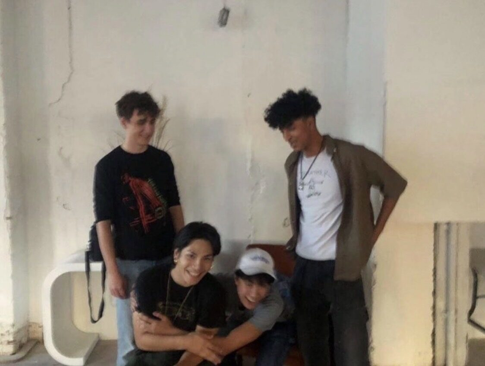
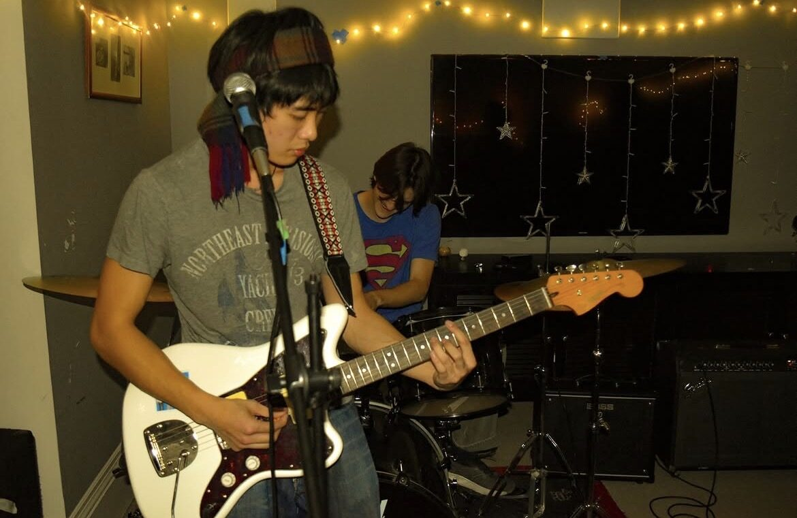
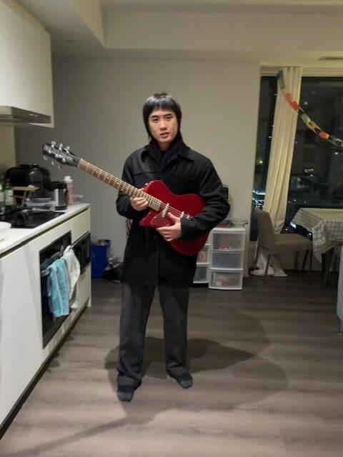
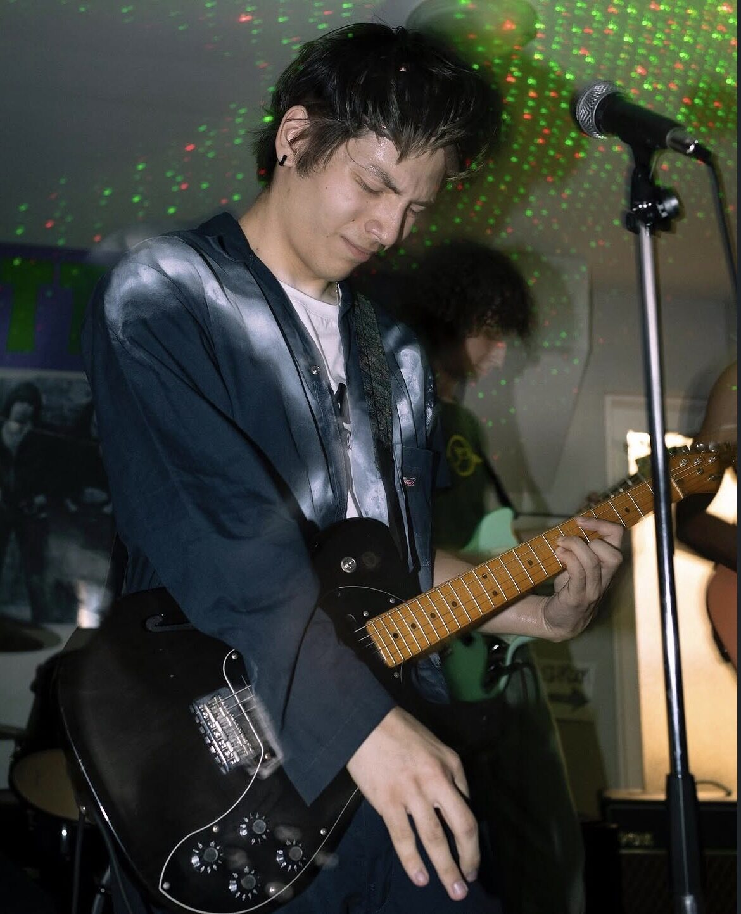
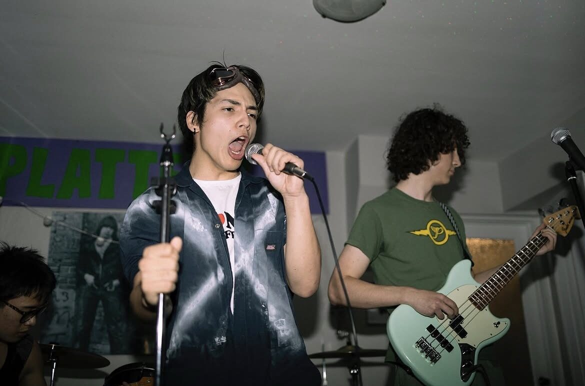
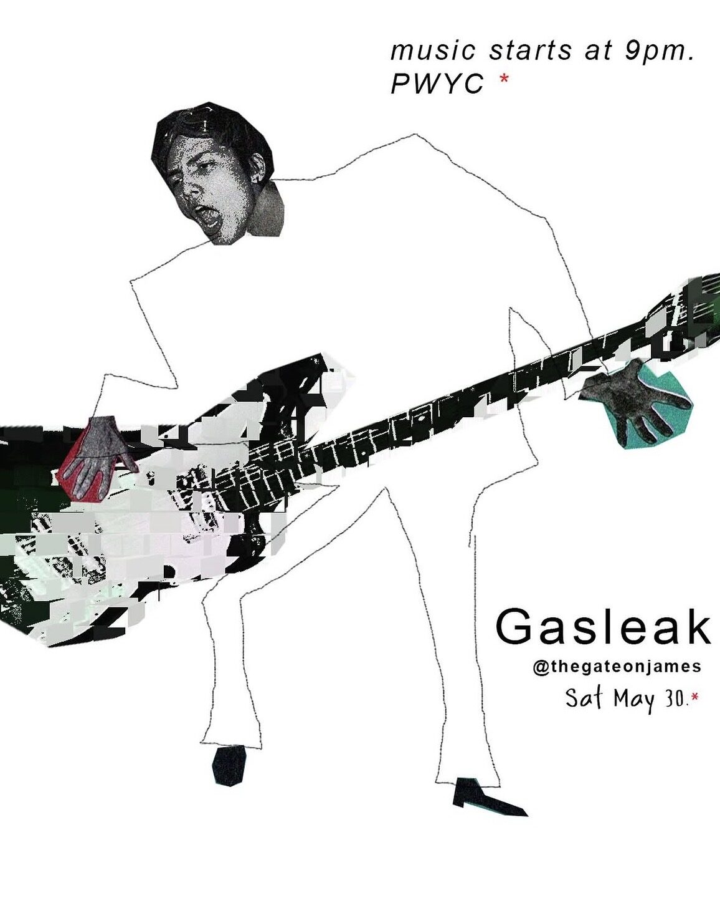
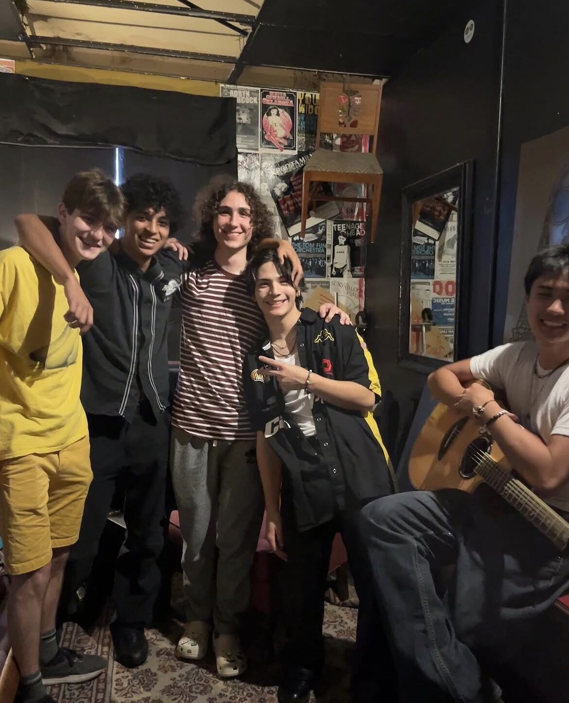
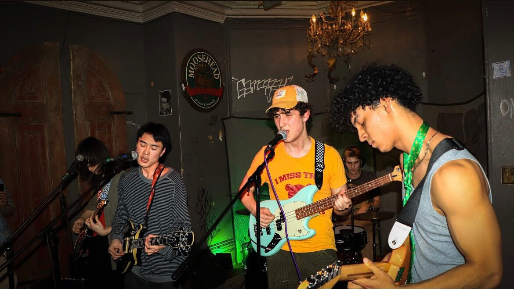
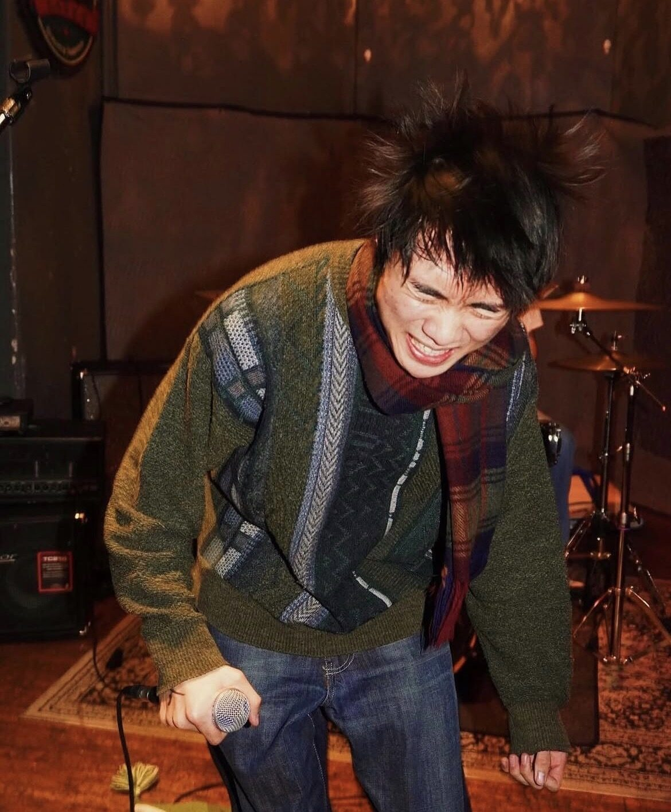
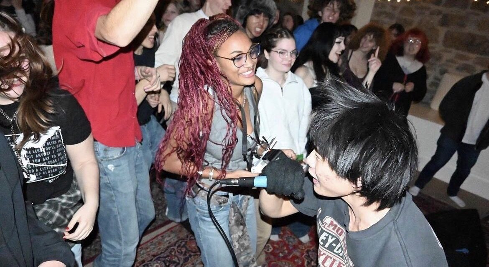
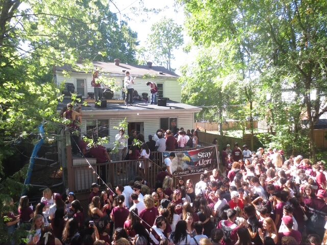